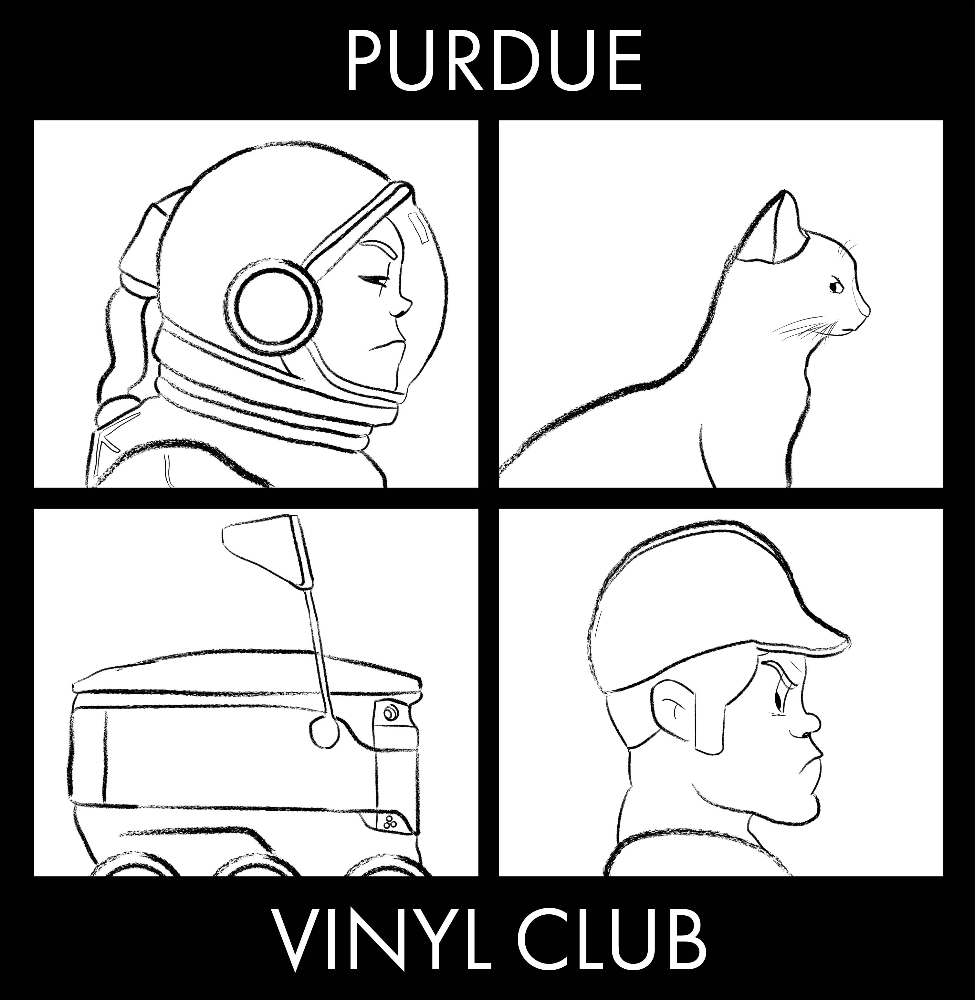
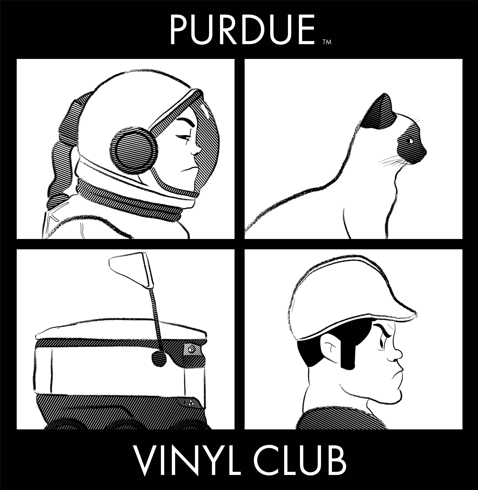
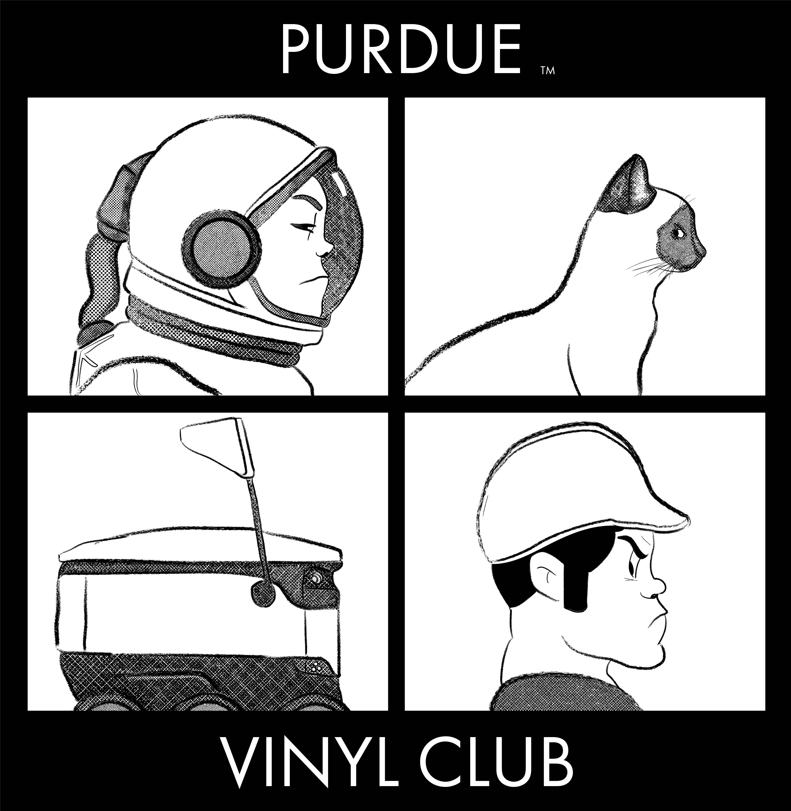
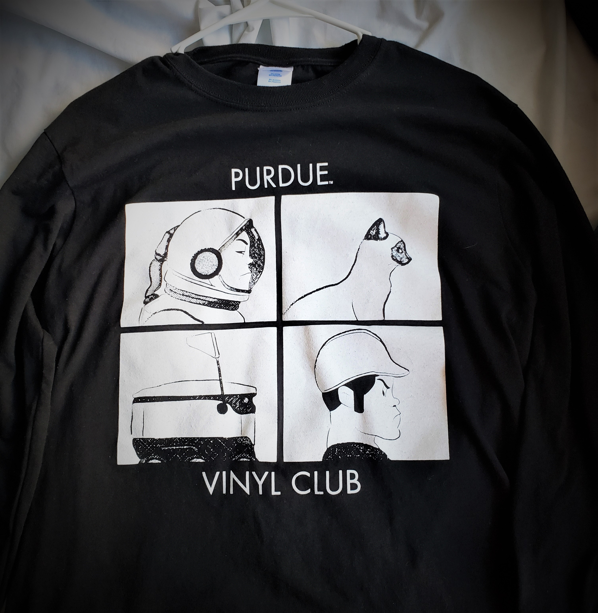
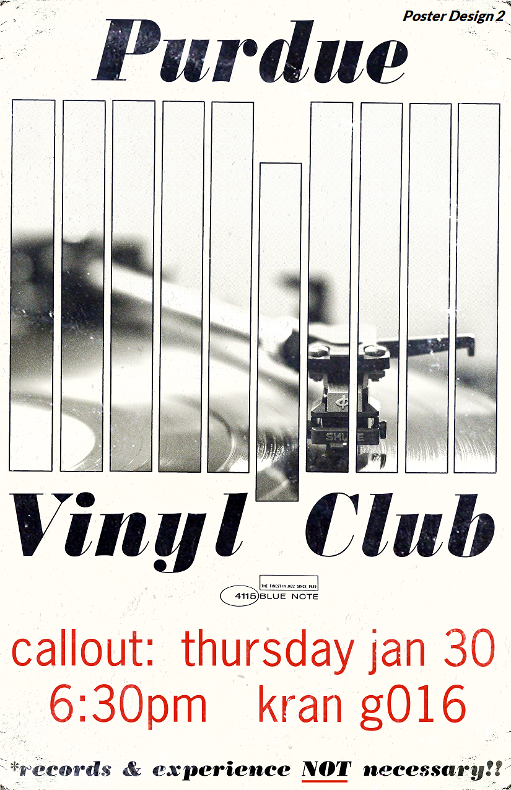
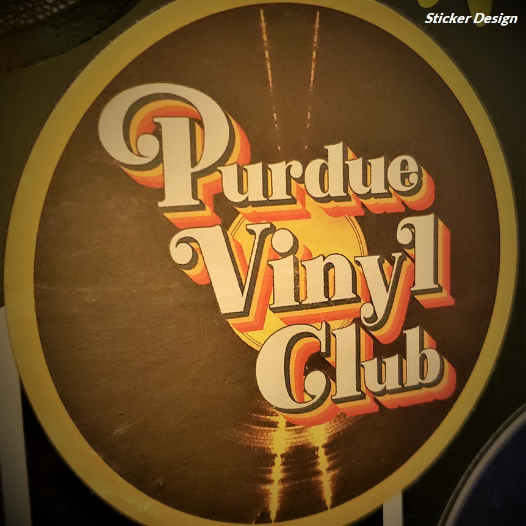
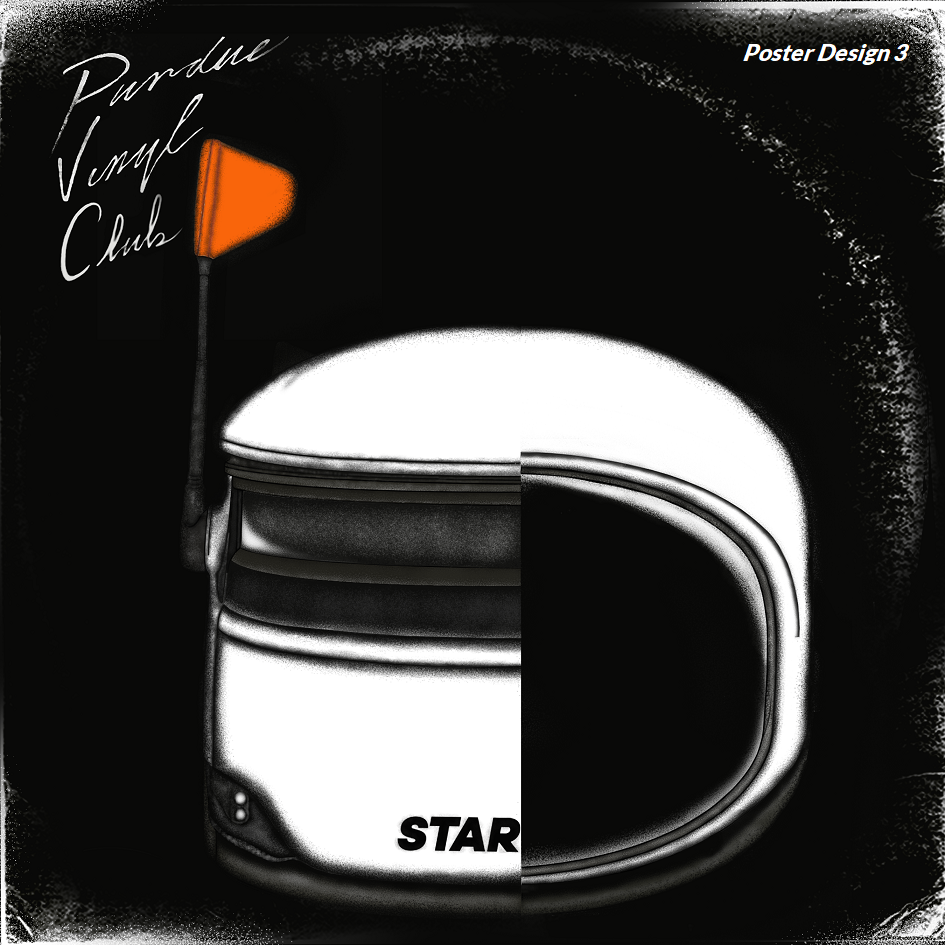

Purdue Vinyl Club
I worked with Purdue Vinyl Club, a student organization I am involved in, to design club merchandise, including t-shirts and stickers. The goal was to mimic the style of pre-existing album covers, but incorporate Purdue-specific elements.
I also created flyers and advertising to entice students to attend meetings and join the organization. These posters would follow trends utilized in design movements of decades past.
Illustration / Branding / Print / Typography
Concepts/Points of Influence
Attending a large university, there's no shortage of competition when it comes to getting the word out about events. My approach to flyer creation was simple: eye-grabbing, but familiar and a purpose that is easily understood. Thinking about eras in design that seemed to best strike this balance, I arrived at Reid Miles' sleek but minimalist work for Blue Note Records, and Colin Brignall's use of bold colors and display fonts during the late '60s and early'70s.

When it came to designing t-shirts, the consensus was to base the design off of album covers most/all could recognize. Given that tastes varied within the club, choosing one was a great challenge, an even greater one being how to make it unique to the club and fit Purdue as a whole.
Demon Days hit me as a fun concept, as it had always been a personal and club favorite. The simplicity of the design is also perfect for customization; the key is maintaining the same art style. As for choosing icons, Purdue Pete and the astronaut were no-brainers, and the rise of the Starship delivery robots on campus had also quickly become synonymous with Purdue. The final place would be filled by the club's defacto mascot Milk, one of the officer's Siamese cat.
Process/Results
In making the shirts, I was limited to using one color in order to keep within the club's budget, but I had approached a problem like this before. In order to achieve depth and the album's iconic style, I would seek out a couple techniques. My first attempt included hatching lines, where lines would be stacked closer or farther apart to create different shadings. However, the challenge became whether the printing machines would be able to pick up such fine details, or if they would be lost.


I ended up deciding not to chance it, in addition to being advised by someone with experience in printing t-shirts. My second solution, the recommended option, was using halftone brushes. Halftones, where darkness is controlled by density of dots, can be reproduced with higher fidelity in printing. Overall, I was pleased with how the design turned out, and the shirt has gotten nothing but praise since they were printed.


Other Projects



